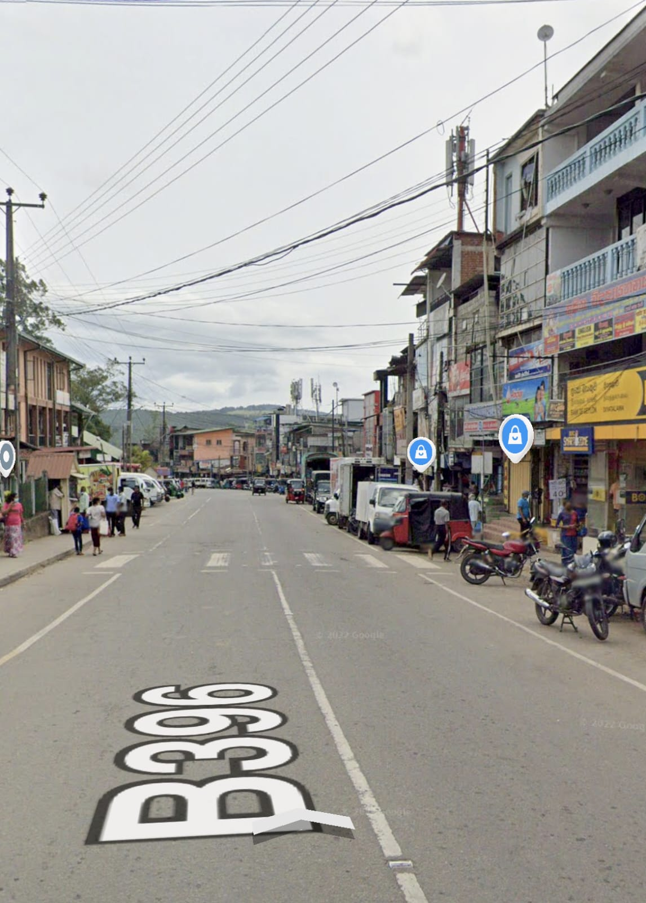
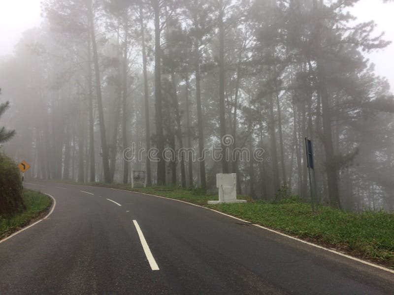
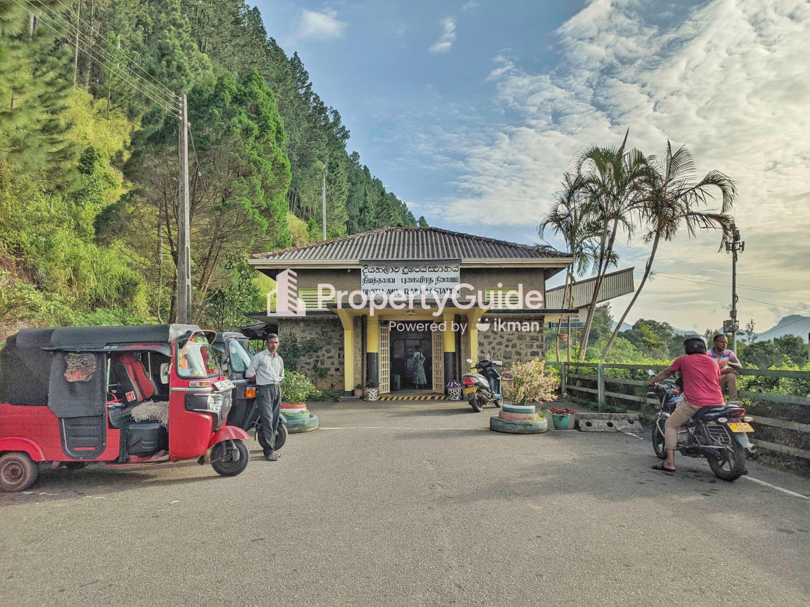
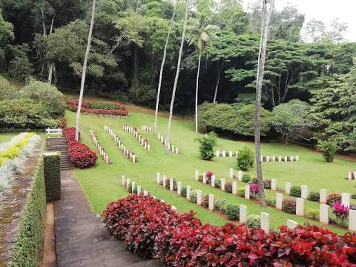

Uva Province · Badulla District · Sri Lanka
A hill-country town of misty grasslands and pine-lined ridges, known as "the watered plain" — shaped by a colonial mission, a wartime prison camp, and a century of military tradition, and today one of Sri Lanka's best-loved highland retreats.
01 — Introduction
Diyatalawa sits at roughly 1,250 metres above sea level in the Badulla District of Uva Province, in Sri Lanka's central highlands. Its name, commonly translated as "the watered plain," describes the open, grassy valley that sets it apart from the denser forest and tea-estate landscapes surrounding it.
The town's character has always been shaped by its cool climate and open terrain — qualities that first drew a colonial-era Christian mission here, and later made it an ideal site for military training grounds that still define the town today.
Province: Uva
District: Badulla
Elevation: ~1,250 m
Coordinates: 6.8114° N, 80.9569° E
Climate: Cool, dry, and misty for a tropical country
Known for: Military academy, open grasslands, colonial history
02 — History
Diyatalawa's modern history began not with settlers, but with a mission. In 1879, Reverend Samuel Langdon leased land here from the colonial government and established the "Happy Valley" mission — an orphanage, chapel, hospital, and industrial school on what had previously been largely uninhabited highland. Around the same time, the British Army recognised the valley's open terrain and cool climate as ideal for training, and by the mid-1880s had established a garrison known as the Imperial Camp.
1879
Rev. Samuel Langdon establishes a mission settlement, marking the first organised habitation of the valley.
c. 1885
The British Army sets up the Imperial Camp, beginning Diyatalawa's long association with military training.
1900–1903
During the Second Boer War, the mission site is repurposed into one of the largest Boer POW camps outside South Africa, at times holding close to 5,000 prisoners. A cemetery from this period still survives near the present-day rifle range.
20th century
What had been a temporary wartime settlement matures into a permanent military training hub, eventually giving rise to the Sri Lanka Military Academy and the Air Force Combat Training School.
Present day
Diyatalawa today balances its military identity with life as a quiet highland town — a base for tea smallholders, families, and visitors drawn to its cool air and open views.
03 — Culture & Traditions
Life in Diyatalawa runs partly on the calendar of the Sri Lanka Military Academy — passing-out parades, training exercises, and a visible service presence shape the town's identity in a way few other Sri Lankan towns share.
Away from the parade grounds, daily life follows the pattern of a small hill-country town: temple and church observances, weekly markets, and close-knit neighbourhoods built around tea smallholdings.
Sinhalese highland tradition sits alongside colonial-era architecture and burial grounds — churches, bungalows, and cemeteries that quietly record the town's mission and wartime past.
Note for your submission: expand this section with first-hand detail — a local festival, a family tradition, a market-day observation — to keep the culture section grounded in real, current community life rather than only historical framing.
04 — Unique Characteristics
Unlike the steep, forested terrain typical of Sri Lanka's hill country, Diyatalawa's valley is unusually open and grassy — the trait its name refers to, and the reason it was chosen for both a mission and a military camp.
At 1,250 m, Diyatalawa is noticeably cooler and drier than the surrounding tea country, giving it a distinct microclimate that has long made it a retreat from the tropical heat of the lowlands.
Few Sri Lankan towns of this size host a national military academy and air force training school — institutions that shape everything from the local economy to the built landscape.
The Boer POW cemetery is one of the only physical traces of the Second Boer War found anywhere in South Asia, giving Diyatalawa a genuinely unusual place in global military history.
05 — Important Landmarks
The country's principal officer-training institution, and the single most defining landmark in Diyatalawa.
Burial ground of Boer and British personnel from the 1900–1903 POW camp, marked by rows of Celtic-cross headstones.
One of Sri Lanka's oldest golf courses, laid out across the open highland terrain.
A stop on the scenic upcountry line connecting the hill country to Colombo and Badulla.
A colonial-era church reflecting the British and mission-era roots of the settlement.
The main commercial strip — shops, the bus stand, and the weekly market that anchors everyday life.
Add landmarks specific to your own knowledge of the village — a temple, a viewpoint, a family-run business — the examiners will be looking for local detail beyond what's easily found online.
06 — Photos & Videos




07 — Location & Maps
Diyatalawa lies in the Badulla District of Uva Province, along the upcountry railway line, between Haputale and Bandarawela in Sri Lanka's central highlands.
Simple orientation map. See the Geo-Portal below for detailed, layered spatial data.
08 — Geo-Portal
Interactive spatial data for the village — toggle layers, click features for details, and download the underlying data.
09 — Get Involved
Follow along, ask a question, or leave a comment — this page is meant to be a two-way channel between the village and the people who visit or live here.
Questions, corrections, or suggestions about the village site or map data.
No comments yet — be the first to share something about Diyatalawa.